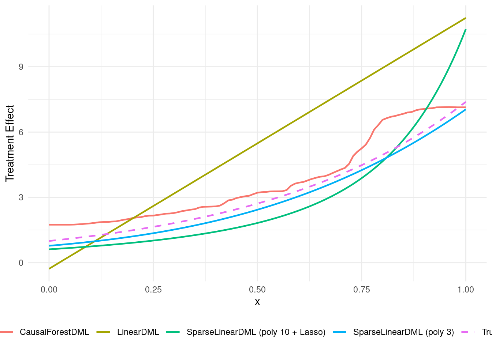
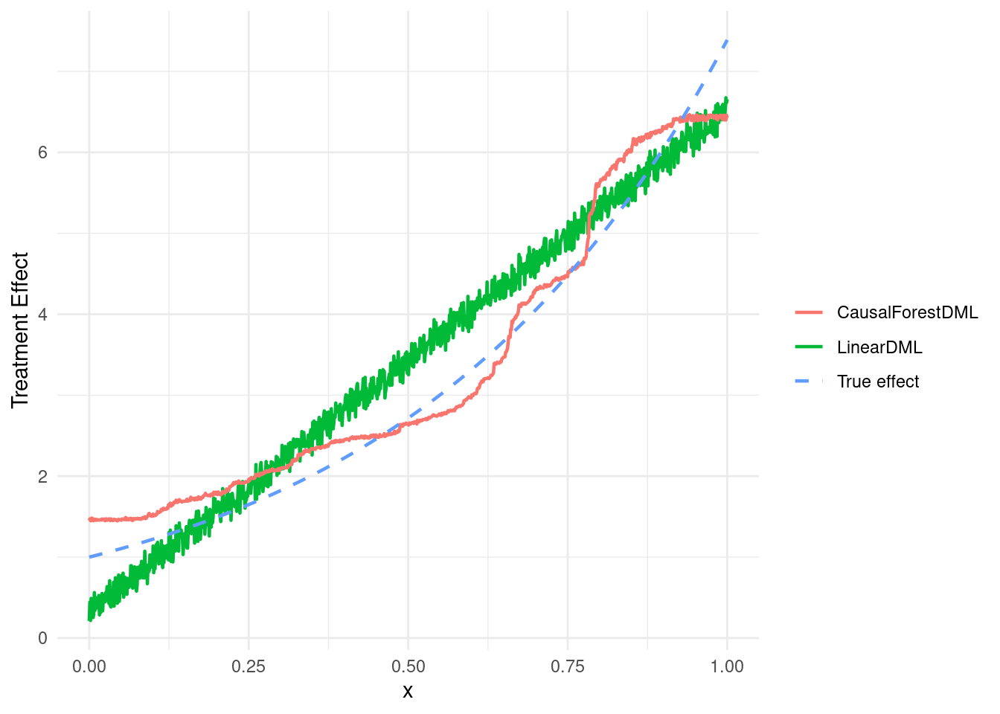
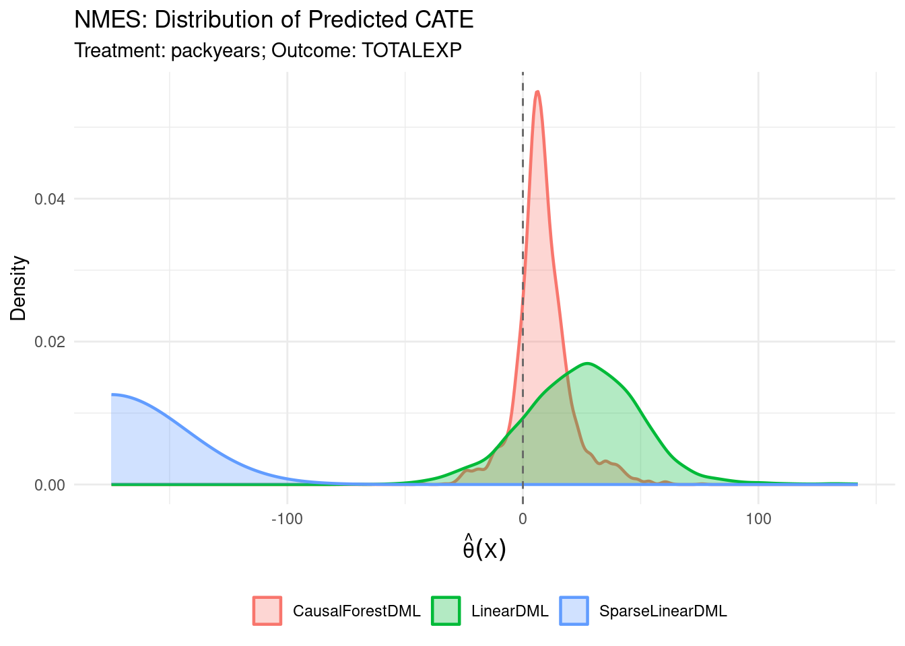
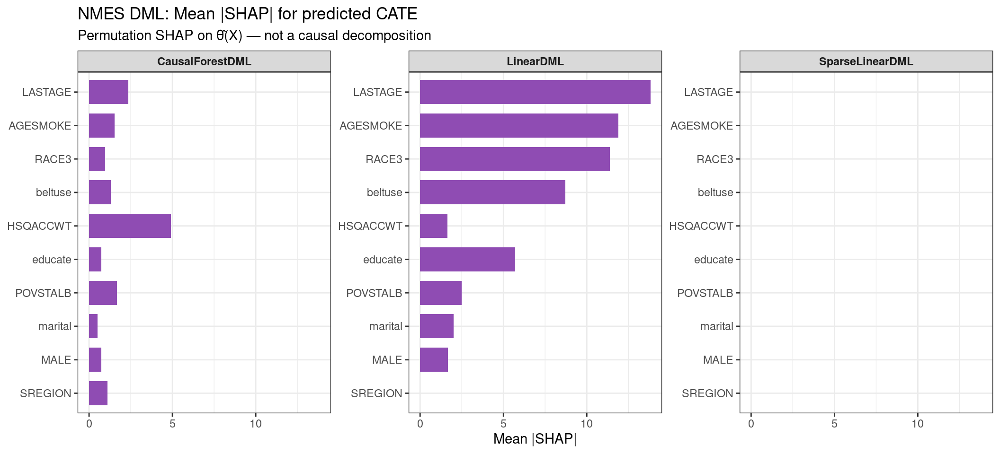
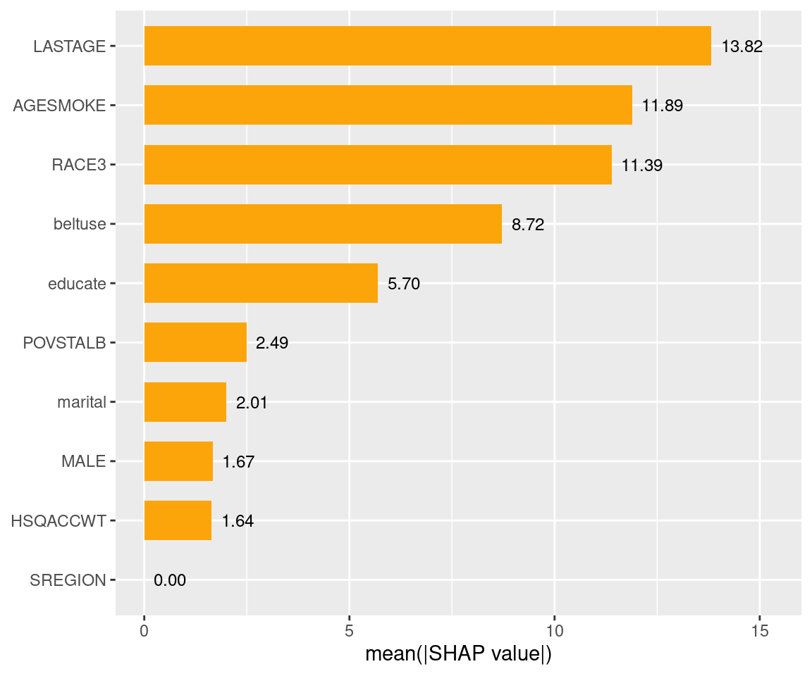
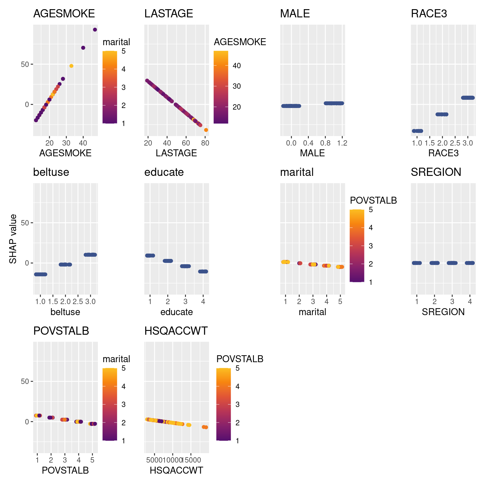
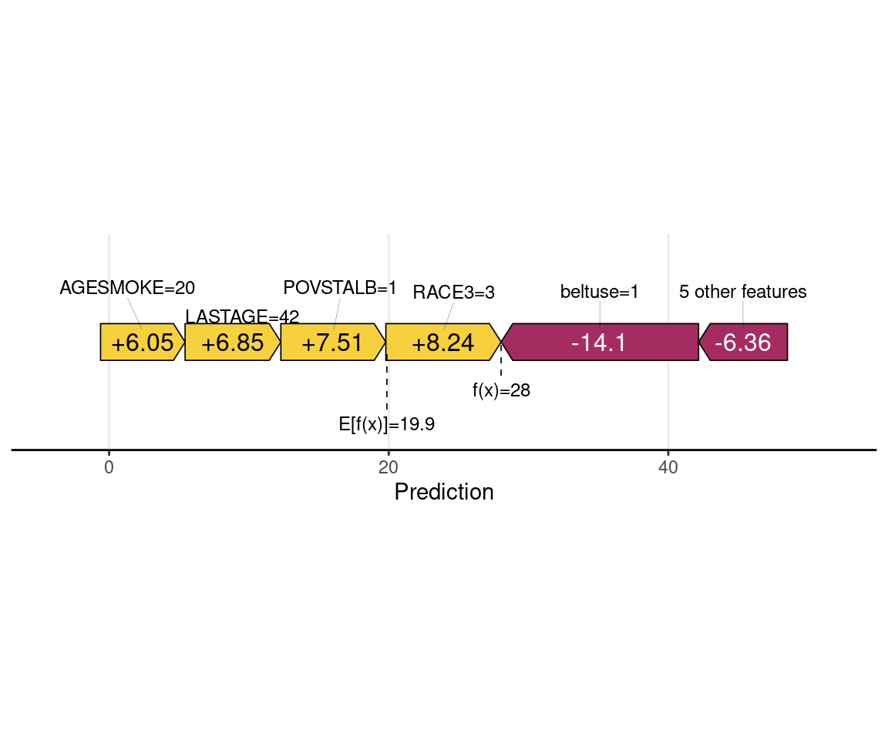
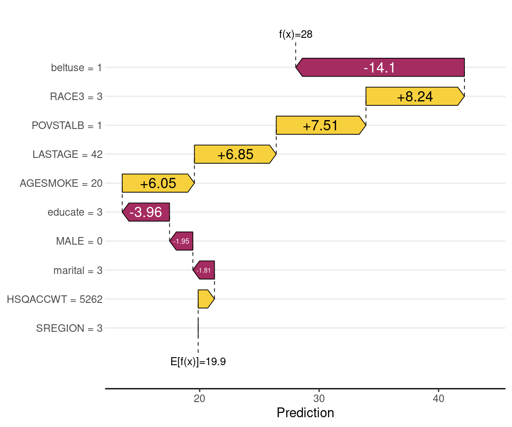

Code
packages <- c(
"RCausalML",
"ggplot2",
"causaldrf",
"kernelshap",
"shapviz",
"future"
)
Double Machine Learning (DML) fits outcome and treatment with flexible ML, then regresses outcome residuals on treatment residuals to estimate the conditional average treatment effect (CATE). The RCausalML R package provides:
grf).This document mirrors the EconML DML Examples using R and R/DMLearner.R. Section 6 applies the same DML estimators to NMES data from {causaldrf} (see also the meta-learner notebook’s NMES use case).
LinearDML, SparseLinearDML, and CausalForestDML are all variants within the DML framework for heterogeneous treatment effects (HTE) — meaning the treatment effect \(\theta(X)\) is allowed to vary across individuals based on their covariates \(X\), rather than being a single constant \(\theta0\).
The shared backbone is the same: residualize \(Y\) and \(D\) using ML nuisance models, then estimate the treatment effect from the residuals. What differs is how the final stage models \(\theta(X)\).
Assumption: \(\theta(X)\) is a linear function of effect modifiers \(Z \subseteq X\):
\[\theta(X) = \beta0 + \beta1 Z1 + \beta2 Z2 + \cdots\]
Final stage: OLS regression of \(\tilde{Y}\) on \(\tilde{D} \cdot Z\) (the residualized treatment interacted with effect modifiers).
When to use: • You have a small or moderate number of effect modifiers • You want interpretable coefficients on each modifier • You can defend a linear specification for heterogeneity • You need fast, standard-error-ready inference on \(\betak\)
Strengths: Fast, interpretable, standard asymptotic confidence intervals.
Limitation: Misspecified if the true \(\theta(X)\) is nonlinear in \(Z\).
Assumption: \(\theta(X)\) is still linear in effect modifiers, but the modifier space is high-dimensional — many candidate interactions, most of which are zero:
\[\theta(X) = Z^\top \beta, \quad \text{where } \beta \text{ is sparse}\]
Final stage: Lasso (or another penalized regression) of \(\tilde{Y}\) on \(\tilde{D} \cdot Z\), followed by post-selection inference (typically via the desparsified/debiased Lasso) to recover valid confidence intervals.
When to use:
• You have many potential effect modifiers (e.g., dozens to hundreds) • You believe only a few truly drive heterogeneity • You still want coefficient-level inference after selection
Strengths: Handles high-dimensional \(Z\); automatic variable selection; valid inference via debiasing.
Limitation: Still assumes linearity in \(Z\); the debiased Lasso inference machinery adds complexity.
Assumption: \(\theta(X)\) is an arbitrary nonparametric function of \(X\) — no linearity assumed.
Final stage: Fits a causal forest (Wager & Athey, 2018) on the residuals \((\tilde{Y}, \tilde{D})\), producing a separate local estimate \(\hat{\theta}(x)\) for each point \(x\).
The causal forest grows trees that explicitly optimize for treatment effect heterogeneity rather than prediction accuracy, using a criterion based on:
\[\hat{\theta}(x) = \arg\min\theta \sum{i \in \text{leaf}(x)} \left(\tilde{Y}i - \theta \cdot \tilde{D}i\right)^2\]
When to use: • You expect complex, nonlinear, or non-additive heterogeneity • You want individual-level or subgroup treatment effect estimates • You have enough data for a forest to be reliable • You want variable importance rankings for effect modifiers
Strengths: Fully nonparametric; honest inference via subsampling-based confidence intervals; produces \(\hat{\theta}(xi)\) for each unit.
Limitation: Requires the grf package; computationally heavier; less interpretable than a coefficient table; needs more data to be reliable.
| LinearDML | SparseLinearDML | CausalForestDML | |
|---|---|---|---|
| HTE model | Linear in \(Z\) | Linear in \(Z\), sparse | Nonparametric \(\theta(X)\) |
| Final stage | OLS | Debiased Lasso | Causal forest (grf) |
| Dim. of modifiers | Low–moderate | High | Low–high |
| Inference | Standard OLS SEs | Debiased Lasso CIs | Subsampling-based CIs |
| Output | Coefficient vector \(\hat{\beta}\) | Sparse \(\hat{\beta}\) | Per-unit \(\hat{\theta}(xi)\) |
| Interpretability | High | High (post-selection) | Low–moderate |
| Compute cost | Low | Low–moderate | High |
| Key assumption | Linearity | Linearity + sparsity | Smoothness only |
Do you expect linear heterogeneity?
├── Yes, few modifiers → LinearDML
├── Yes, many modifiers → SparseLinearDML
└── No / unknown / complex → CausalForestDMLAll three share the same first stage (ML nuisance estimation with cross-fitting), so they inherit DML’s valid inference properties — the difference is entirely in how flexibly and interpretably the second stage captures treatment effect variation.
Below below demonstrates the use of RCausalML’s DMLearner for single continuous and binary treatments, with synthetic data. We also show how to visualize CATE estimates and perform ATE inference. For observational data, the same API applies; just prepare your covariate matrix X accordingly.
Contents:
nmes_data, {causaldrf}): compare LinearDML, SparseLinearDML, CausalForestDML, optional SHAP
Following R packages are required to run this notebook. If any of these packages are not installed, you can install them using the code below:
RCausalML, ggplot2, causaldrf, kernelshap, shapviz, future
packages <- c(
"RCausalML",
"ggplot2",
"causaldrf",
"kernelshap",
"shapviz",
"future"
)# Install missing packages
# new_packages <- packages[!(packages %in% installed.packages()[, "Package"])]
# if (length(new_packages)) install.packages(new_packages)# Load packages with suppressed messages
invisible(lapply(packages, function(pkg) {
suppressPackageStartupMessages(library(pkg, character.only = TRUE))
}))# Check loaded packages
cat("Successfully loaded packages:\n")Successfully loaded packages: [1] "package:future" "package:shapviz" "package:kernelshap"
[4] "package:causaldrf" "package:ggplot2" "package:RCausalML"
[7] "package:stats" "package:graphics" "package:grDevices"
[10] "package:utils" "package:datasets" "package:methods"
[13] "package:base" set.seed(123)We use the DGP from Chernozhukov et al.:
\[T = \langle W, \beta\rangle + \eta\]
\[Y = T\cdot \theta(X) + \langle W, \gamma\rangle + \epsilon\]
with \(\theta(x) = \exp(2\cdot x_1)\). Confounders \(W\) and effect modifier \(X\) are independent. The R DMLearner expects treatment to include a control value (0); we binarize at the median:
\[T_{\text{bin}} = I(T > \text{median}(T))\]
n <- 2000
n_w <- 30
support_size <- 5
n_x <- 1
support_Y <- sample(seq_len(n_w), size = support_size, replace = FALSE)
coefs_Y <- runif(support_size, 0, 1)
support_T <- support_Y
coefs_T <- runif(support_size, 0, 1)
W <- matrix(rnorm(n * n_w), n, n_w)
X <- matrix(runif(n * n_x), n, n_x)
TE <- apply(X, 1, exp_te)
T_vec <- as.numeric(W[, support_T] %*% coefs_T + eta_sample(n))
Y <- TE * T_vec + as.numeric(W[, support_Y] %*% coefs_Y) + epsilon_sample(n)
# R DMLearner expects treatment to include control_name (0). Binarize at median.
T_bin <- as.integer(T_vec > median(T_vec))
# Train/validation split
idx <- sample.int(n, size = round(0.2 * n))
idx_val <- idx
idx_train <- setdiff(seq_len(n), idx_val)
Y_train <- Y[idx_train]
Y_val <- Y[idx_val]
T_train <- T_bin[idx_train]
T_val <- T_bin[idx_val]
X_train <- X[idx_train, , drop = FALSE]
X_val <- X[idx_val, , drop = FALSE]
W_train <- W[idx_train, , drop = FALSE]
W_val <- W[idx_val, , drop = FALSE]
# Full covariate for first stage (X and W). DMLearner uses single X matrix.
X_all_train <- cbind(X_train, W_train)
X_all_val <- cbind(X_val, W_val)
colnames(X_all_train) <- paste0("V", seq_len(ncol(X_all_train)))
colnames(X_all_val) <- colnames(X_all_train)
# Test grid (effect modifier only); for prediction we pair with mean W
X_test <- matrix(seq(0, 1, by = 0.01), ncol = 1)
W_rep <- matrix(colMeans(W_train), nrow = nrow(X_test), ncol = ncol(W_train), byrow = TRUE)
X_all_test <- cbind(X_test, W_rep)
colnames(X_all_test) <- colnames(X_all_train)We compare LinearDML (default), SparseLinearDML with polynomial features (degree 3), SparseLinearDML with degree-10 polynomial + Lasso, and CausalForestDML.
est <- LinearDML(model_y = "ranger", model_t = "ranger", n_fold = 5L, seed = 123L)
est <- fit(est, X_all_train, T_train, Y_train)
te_pred <- predict(est, X_all_test)# Polynomial degree 3 on effect modifier; confounders W as-is
X_poly3_train <- cbind(poly(X_train[, 1], degree = 3, raw = TRUE), W_train)
X_poly3_val <- cbind(poly(X_val[, 1], degree = 3, raw = TRUE), W_val)
X_poly3_test <- cbind(poly(X_test[, 1], degree = 3, raw = TRUE), W_rep)
colnames(X_poly3_train) <- paste0("V", seq_len(ncol(X_poly3_train)))
colnames(X_poly3_val) <- colnames(X_poly3_train)
colnames(X_poly3_test) <- colnames(X_poly3_train)
est1 <- SparseLinearDML(model_y = "ranger", model_t = "ranger", alpha = 0.01, n_fold = 5L, seed = 123L)
est1 <- fit(est1, X_poly3_train, T_train, Y_train)
te_pred1 <- predict(est1, X_poly3_test)# Polynomial degree 10 + Lasso final stage
X_poly10_train <- cbind(poly(X_train[, 1], degree = 10, raw = TRUE), W_train)
X_poly10_val <- cbind(poly(X_val[, 1], degree = 10, raw = TRUE), W_val)
X_poly10_test <- cbind(poly(X_test[, 1], degree = 10, raw = TRUE), W_rep)
colnames(X_poly10_train) <- paste0("V", seq_len(ncol(X_poly10_train)))
colnames(X_poly10_val) <- colnames(X_poly10_train)
colnames(X_poly10_test) <- colnames(X_poly10_train)
est2 <- SparseLinearDML(model_y = "ranger", model_t = "ranger", alpha = 0.1, n_fold = 5L, seed = 123L)
est2 <- fit(est2, X_poly10_train, T_train, Y_train)
te_pred2 <- predict(est2, X_poly10_test)if (requireNamespace("grf", quietly = TRUE)) {
est3 <- CausalForestDML(
model_y = "ranger", model_t = "ranger",
n_fold = 5L, seed = 123L, num_trees = 1000L, min_node_size = 5L
)
est3 <- fit(est3, X_all_train, T_train, Y_train)
te_pred3 <- predict(est3, X_all_test)
} else {
te_pred3 <- rep(NA_real_, nrow(X_all_test))
message("Package 'grf' not installed; CausalForestDML skipped.")
}expected_te <- apply(X_test, 1, exp_te)
df_plot <- data.frame(
x = rep(X_test[, 1], 5),
te = c(te_pred, te_pred1, te_pred2, te_pred3, expected_te),
method = rep(c("LinearDML", "SparseLinearDML (poly 3)", "SparseLinearDML (poly 10 + Lasso)",
"CausalForestDML", "True effect"), each = length(te_pred))
)
ggplot(df_plot, aes(x = x, y = te, colour = method, linetype = method)) +
geom_line(linewidth = 0.8) +
scale_linetype_manual(values = c(rep("solid", 4), "dashed")) +
labs(y = "Treatment Effect", x = "x", colour = "", linetype = "") +
theme_minimal() +
theme(legend.position = "bottom")
We use mean squared error (MSE) of predicted CATE vs true CATE on the test grid as a proxy for model quality. (EconML’s score() is not in the R DMLearner; we use this instead.)
mse_te <- c(
"LinearDML" = mean((expected_te - te_pred)^2),
"SparseLinearDML (poly 3)" = mean((expected_te - te_pred1)^2),
"SparseLinearDML (poly 10 + Lasso)" = mean((expected_te - te_pred2)^2),
"CausalForestDML" = if (all(!is.na(te_pred3))) mean((expected_te - te_pred3)^2) else NA_real_
)
print(mse_te) LinearDML SparseLinearDML (poly 3)
7.97847741 0.07211196
SparseLinearDML (poly 10 + Lasso) CausalForestDML
0.90497396 0.46968272 print("Best by MSE of TE:")[1] "Best by MSE of TE:"[1] "SparseLinearDML (poly 3)"Treatment is binary:
\[T \sim \text{Bernoulli}(\sigma(\langle W, \beta\rangle + \eta))\]
Outcome:
\[Y = T\cdot \theta(X) + \langle W, \gamma\rangle + \epsilon\]
with \(\theta(x) = \exp(2\cdot x_1)\).
n <- 1000
n_w <- 30
support_size <- 5
n_x <- 4
support_Y <- sample(seq_len(n_w), size = support_size, replace = FALSE)
coefs_Y <- runif(support_size, 0, 1)
support_T <- support_Y
coefs_T <- runif(support_size, 0, 1)
W <- matrix(rnorm(n * n_w), n, n_w)
X <- matrix(runif(n * n_x), n, n_x)
TE <- apply(X, 1, exp_te)
log_odds <- as.numeric(W[, support_T] %*% coefs_T + eta_sample(n))
T_sigmoid <- 1 / (1 + exp(-log_odds))
T_bin <- as.integer(runif(n) < T_sigmoid)
Y_bin <- TE * T_bin + as.numeric(W[, support_Y] %*% coefs_Y) + epsilon_sample(n)
X_all_bin <- cbind(X, W)
colnames(X_all_bin) <- paste0("V", seq_len(ncol(X_all_bin)))
X_test_bin <- matrix(runif(n * n_x), n, n_x)
X_test_bin[, 1] <- seq(0, 1, length.out = n)
W_rep_bin <- matrix(colMeans(W), nrow = n, ncol = ncol(W), byrow = TRUE)
X_all_test_bin <- cbind(X_test_bin, W_rep_bin)
colnames(X_all_test_bin) <- colnames(X_all_bin)DMLearner treats any non-control value as treatment; pass 0/1 or factor.
est_b <- LinearDML(model_y = "ranger", model_t = "ranger", n_fold = 6L, seed = 123L)
est_b <- fit(est_b, X_all_bin, T_bin, Y_bin)
te_pred_b <- predict(est_b, X_all_test_bin)if (requireNamespace("grf", quietly = TRUE)) {
est_b3 <- CausalForestDML(model_y = "ranger", model_t = "ranger", n_fold = 6L, seed = 123L,
num_trees = 1000L, min_node_size = 5L)
est_b3 <- fit(est_b3, X_all_bin, T_bin, Y_bin)
te_pred_b3 <- predict(est_b3, X_all_test_bin)
} else {
te_pred_b3 <- rep(NA_real_, n)
}R DMLearner does not provide pointwise effect_interval; we show point estimates and average treatment effect (ATE) with confidence interval.
expected_te_b <- apply(X_test_bin, 1, exp_te)
df_b <- data.frame(
x = X_test_bin[, 1],
te_linear = te_pred_b,
te_forest = if (length(te_pred_b3) == length(expected_te_b)) te_pred_b3 else NA_real_,
true = expected_te_b
)
ggplot(df_b, aes(x = x)) +
geom_line(aes(y = te_linear, colour = "LinearDML"), linewidth = 0.8) +
geom_line(aes(y = te_forest, colour = "CausalForestDML"), linewidth = 0.8) +
geom_line(aes(y = true, colour = "True effect"), linetype = "dashed", linewidth = 0.8) +
labs(y = "Treatment Effect", x = "x", colour = "") +
theme_minimal()
ate_linear <- estimate_ate(est_b, X_all_bin, T_bin, Y_bin, return_ci = TRUE)
print("LinearDML ATE (with CI):")[1] "LinearDML ATE (with CI):"print(ate_linear)$ate
[1] 3.384473
$ate_lb
[1] 3.270596
$ate_ub
[1] 3.49835if (requireNamespace("grf", quietly = TRUE)) {
ate_forest <- estimate_ate(est_b3, X_all_bin, T_bin, Y_bin, return_ci = TRUE)
print("CausalForestDML ATE (with CI):")
print(ate_forest)
}[1] "CausalForestDML ATE (with CI):"
$ate
[1] 3.307393
$ate_lb
[1] 3.204078
$ate_ub
[1] 3.410707Section 1 already fits the same DGP with three linear final stages: LinearDML on raw X and W (est), SparseLinearDML on degree-3 polynomials of \(x_1\) plus W (est1), and SparseLinearDML on degree-10 polynomials plus W with a stronger Lasso penalty (est2). Here we interpret the fitted CATE as a linear model in the columns passed to fit:
\[\hat{\theta}(z) = \hat{\beta}_0 + z^\top \hat{\beta},\]
where \(z\) is one row of that design matrix (raw covariates, or polynomial terms in \(x_1\) plus \(W\), etc.). coef() returns \(\hat{\beta}\) aligned with column names V1, V2, …; intercept() returns \(\hat{\beta}_0\).
cat("LinearDML (linear in V1 = x, V2.. = W): intercept\n")LinearDML (linear in V1 = x, V2.. = W): interceptprint(intercept(est))[1] -0.2843143First 8 CATE coefficients (of 31 ): V1 V2 V3 V4 V5 V6
11.52029346 -0.04599749 0.13069832 -0.25606666 0.02756752 -0.13174818
V7 V8
0.13243560 -0.06931294 cat("\nSparseLinearDML poly(degree=3): intercept\n")
SparseLinearDML poly(degree=3): interceptprint(intercept(est1))[1] 0.7942147cat("CATE coefficients (V1=x, V2=x^2, V3=x^3, then W):\n")CATE coefficients (V1=x, V2=x^2, V3=x^3, then W): V1 V2 V3 V4 V5 V6
1.61808769 2.12718511 2.51936848 0.00000000 0.00000000 -0.00473449
V7 V8 V9 V10 V11 V12
0.00000000 0.00000000 0.01996089 0.00000000 0.00000000 0.00000000 cat("\nSparseLinearDML poly(degree=10) + Lasso: intercept\n")
SparseLinearDML poly(degree=10) + Lasso: interceptprint(intercept(est2))[1] 0.6257921cat("Nonzero CATE coefficients (sparsity from Lasso):\n")Nonzero CATE coefficients (sparsity from Lasso): V1 V2 V3 V4 V5 V6 V7 V8
1.1805697 1.2852522 1.2695069 1.2083537 1.1255493 1.0292545 0.9239318 0.8124863
V9 V10
0.6971761 0.5799074 predict
LinearDML (OLS final stage): coef() and intercept() are the CATE parameters for \(\hat{\theta}(z) = \hat{\beta}_0 + z^\top\hat{\beta}\), so they agree with a direct dot product (same ordering as columns of newdata).
SparseLinearDML (glmnet final stage): glmnet fits an extra global intercept on top of the column named intercept (the residualized treatment scale). Reconstruct CATE as \(\hat{\eta} = b_0 + \tilde{z}^\top b_{1:p}\) where \(\tilde{z} = (1, z^\top)^\top\) matches predict()’s cbind(intercept = 1, newdata); use the full coef(fit, s = "lambda.1se") vector, or call predict() directly.
i <- which.min(abs(X_all_test[, 1] - 0.5))
z_lm <- as.numeric(X_all_test[i, , drop = TRUE])
pred_lm <- as.numeric(predict(est, X_all_test[i, , drop = FALSE]))
manual_lm <- intercept(est) + sum(coef(est) * z_lm)
cat("LinearDML at x ≈ 0.5: predict() =", pred_lm, "; intercept(est) + sum(coef(est)*z) =", manual_lm, "\n")LinearDML at x ≈ 0.5: predict() = 5.48403 ; intercept(est) + sum(coef(est)*z) = 5.48403 D_poly <- cbind(intercept = 1, X_poly3_test[i, , drop = FALSE])
pred_poly <- as.numeric(predict(est1, X_poly3_test[i, , drop = FALSE]))
b_g <- as.matrix(coef(est1$model_cate$model, s = "lambda.1se"))
manual_poly <- as.numeric(b_g[1L, 1L] + D_poly %*% b_g[-1L, 1L])
cat("SparseLinearDML (poly 3) same row: predict() =", pred_poly,
"; b0 + (1,z) %*% b =", manual_poly, "\n")SparseLinearDML (poly 3) same row: predict() = 2.43541 ; b0 + (1,z) %*% b = 2.43541 cat("\nTrue TE at this x (DGP): theta(x) = exp(2*x_1) =", exp_te(z_lm), "\n")
True TE at this x (DGP): theta(x) = exp(2*x_1) = 2.718282 For observational data (e.g. Orange Juice data from EconML), you can use the same DMLearner API as for synthetic data:
X (e.g., income and other effect modifiers). You may also include observed confounders in X.fit(est, X, T, Y), where T is the continuous treatment and Y is the outcome.predict(est, newdata).estimate_ate(..., return_ci = TRUE).Note: Pointwise (per-row) CATE intervals are not currently implemented in the R DMLearner.
# Simulated observational data (for illustration)
set.seed(123)
n <- 300
X_obs <- data.frame(
income = rnorm(n, mean = 50, sd = 15),
age = rnorm(n, mean = 40, sd = 10)
)
T_obs <- 0.1 * X_obs$income + 0.05 * X_obs$age + rnorm(n)
Y_obs <- 2 + 1.5 * T_obs + 0.3 * X_obs$income - 0.2 * X_obs$age + rnorm(n)
library(RCausalML)
est_obs <- LinearDML()
est_obs <- fit(est_obs, X_obs, T_obs, Y_obs)
# Predict heterogeneous treatment effect (CATE) for observed X
cate_pred <- predict(est_obs, X_obs)
cat("First 5 predicted CATEs:\n")First 5 predicted CATEs:[1] 1.873988 1.833302 1.610582 1.833358 1.739290# Average Treatment Effect (ATE) with confidence interval
ate_ci <- estimate_ate(est_obs, X_obs, T_obs, Y_obs, return_ci = TRUE)
cat("Estimated ATE (with CI):\n")Estimated ATE (with CI):print(ate_ci)$ate
[1] 1.608928
$ate_lb
[1] 1.592622
$ate_ub
[1] 1.625234The EconML DML stack supports a matrix of continuous treatments T (e.g. log prices per brand in the Dominick’s OJ example). RCausalML mirrors that pattern: pass treatment as an \(n \times d\) numeric matrix or data.frame with \(d > 1\) columns.
model_y / model_t learners as for a scalar treatment (continuous columns use regression nuisances, as in EconML).cross_product in econml.dml), so each treatment dimension gets its own heterogeneous coefficient \(\hat{\theta}_j(X)\).fit(est, X, T_matrix, y), then predict(est, newdata) returns an \(n_{\mathrm{new}} \times d\) matrix of marginal CATEs (one column per treatment). estimate_ate(..., return_ci = TRUE) returns vector ate, ate_lb, and ate_ub with one element per treatment dimension.model_final is "lm", "glmnet", or "kernel"). CausalForestDML and NonParamDML (ranger/xgb) still require a single treatment dimension. For panel / sequential settings, DynamicDMLearner remains the dedicated native-R entry point.Multiple outcomes (vector Y) are not implemented in DMLearner; use separate fits per outcome or Python EconML if you need a joint multi-outcome model. See the original EconML notebook for the full Dominick’s-style setup.
set.seed(123)
n <- 350
X_m <- data.frame(income = rnorm(n, 50, 15), age = rnorm(n, 40, 10))
# Two correlated continuous treatments (observational)
T_m <- cbind(
T1 = 0.08 * X_m$income + 0.02 * X_m$age + rnorm(n),
T2 = -0.05 * X_m$income + 0.06 * X_m$age + rnorm(n)
)
Y_m <- 2 + 1.1 * T_m[, 1] + 0.6 * T_m[, 2] + 0.25 * X_m$income - 0.1 * X_m$age + rnorm(n)
library(RCausalML)
est_m <- LinearDML(n_fold = 5L, seed = 123)
est_m <- fit(est_m, X_m, T_m, Y_m)
cate_m <- predict(est_m, X_m)
cat("Dimensions of predicted CATE matrix (n x d):", paste(dim(cate_m), collapse = " x "), "\n")Dimensions of predicted CATE matrix (n x d): 350 x 2 T1 T2
[1,] 1.1056177 0.5440505
[2,] 0.7469703 0.6733157
[3,] 0.7313425 0.4460835ate_m <- estimate_ate(est_m, X_m, T_m, Y_m, return_ci = TRUE, pretrain = TRUE)
cat("ATE per treatment dimension (with CI):\n")ATE per treatment dimension (with CI):print(ate_m)$ate
T1 T2
0.9313875 0.5504409
$ate_lb
T1 T2
0.9156536 0.5408941
$ate_ub
T1 T2
0.9471214 0.5599876 We use nmes_data from {causaldrf} (1987 National Medical Expenditure Survey): outcome TOTALEXP, continuous treatment packyears, and the same covariate set as in the meta-learner notebook. For render time we take a random subsample (up to 3,000 rows). We fit LinearDML, SparseLinearDML, and CausalForestDML with ranger nuisances and compare ATE (large-sample CI for the mean CATE), holdout RMSE of a refitted outcome nuisance on a 30 % test split, and Spearman correlation of predicted \(\hat{\theta}(X)\) across methods. SHAP (optional: kernelshap, shapviz) attributes predicted CATE to covariates.
nmes_dml_ready <- FALSE
X_nmes_dml <- y_nmes_dml <- d_nmes_dml <- NULL
if (!requireNamespace("causaldrf", quietly = TRUE)) {
message("Section 6 skipped: install.packages('causaldrf') for NMES data.")
} else {
data(nmes_data, package = "causaldrf")
covs_nmes_dml <- c(
"AGESMOKE", "LASTAGE", "MALE", "RACE3", "beltuse",
"educate", "marital", "SREGION", "POVSTALB", "HSQACCWT"
)
df_nmes_dml <- data.frame(
Y = nmes_data$TOTALEXP,
D = nmes_data$packyears,
nmes_data[, covs_nmes_dml, drop = FALSE],
check.names = FALSE
)
df_nmes_dml <- df_nmes_dml[stats::complete.cases(df_nmes_dml), , drop = FALSE]
for (vn in covs_nmes_dml) {
df_nmes_dml[[vn]] <- suppressWarnings(
as.numeric(as.character(df_nmes_dml[[vn]]))
)
}
X_full <- as.matrix(df_nmes_dml[, covs_nmes_dml, drop = FALSE])
colnames(X_full) <- covs_nmes_dml
set.seed(4242L)
n_sub <- min(3000L, nrow(X_full))
idx_sub <- sample.int(nrow(X_full), n_sub)
X_nmes_dml <- X_full[idx_sub, , drop = FALSE]
y_nmes_dml <- df_nmes_dml$Y[idx_sub]
d_nmes_dml <- df_nmes_dml$D[idx_sub]
nmes_dml_ready <- TRUE
cat("NMES subsample ready:", n_sub, "rows,",
ncol(X_nmes_dml), "covariates.\n")
cat("Outcome (TOTALEXP) — mean:", round(mean(y_nmes_dml), 1),
" SD:", round(sd(y_nmes_dml), 1), "\n")
cat("Treatment (packyears) — mean:", round(mean(d_nmes_dml), 2),
" SD:", round(sd(d_nmes_dml), 2), "\n")
}NMES subsample ready: 3000 rows, 10 covariates.
Outcome (TOTALEXP) — mean: 1874.4 SD: 6243.4
Treatment (packyears) — mean: 23.98 SD: 23.47 dml_lin_nmes <- NULL
dml_sparse_nmes <- NULL
dml_cf_nmes <- NULL
if (!isTRUE(nmes_dml_ready)) {
message("NMES DML fits skipped: data prep unavailable.")
} else {
# shared settings
n_f_dml <- 4L
n_trees <- 300L # kept modest for render time; raise to 500+ for production
# 1. construct learners
dml_lin_nmes <- LinearDML(
model_y = "ranger", model_t = "ranger",
n_fold = n_f_dml, seed = 20261L
)
dml_sparse_nmes <- SparseLinearDML(
model_y = "ranger", model_t = "ranger",
alpha = 0.15,
n_fold = n_f_dml, seed = 20262L
)
if (!requireNamespace("grf", quietly = TRUE)) {
message("CausalForestDML skipped: install.packages('grf').")
} else {
dml_cf_nmes <- CausalForestDML(
model_y = "ranger", model_t = "ranger",
n_fold = n_f_dml, seed = 20263L,
num_trees = 800L,
min_node_size = 8L
)
}
# 2. fit on full subsample
# num.trees is set inside the learner constructor; do NOT pass to fit()
set.seed(2026L)
dml_lin_nmes <- fit(dml_lin_nmes, X_nmes_dml, d_nmes_dml, y_nmes_dml)
dml_sparse_nmes <- fit(dml_sparse_nmes, X_nmes_dml, d_nmes_dml, y_nmes_dml)
if (!is.null(dml_cf_nmes))
dml_cf_nmes <- fit(dml_cf_nmes, X_nmes_dml, d_nmes_dml, y_nmes_dml)
cat("All DML models fitted successfully.\n")
}All DML models fitted successfully.ate_results <- list()
if (!is.null(dml_lin_nmes)) {
# estimate_ate() — use only documented arguments; pretrain not supported
ate_lin <- estimate_ate(
dml_lin_nmes, X_nmes_dml, d_nmes_dml, y_nmes_dml,
return_ci = TRUE
)
ate_spr <- estimate_ate(
dml_sparse_nmes, X_nmes_dml, d_nmes_dml, y_nmes_dml,
return_ci = TRUE
)
ate_results[["LinearDML"]] <- ate_lin
ate_results[["SparseLinearDML"]] <- ate_spr
if (!is.null(dml_cf_nmes)) {
ate_cf <- estimate_ate(
dml_cf_nmes, X_nmes_dml, d_nmes_dml, y_nmes_dml,
return_ci = TRUE
)
ate_results[["CausalForestDML"]] <- ate_cf
}
# tidy summary
ate_tbl <- do.call(rbind, lapply(names(ate_results), function(nm) {
r <- ate_results[[nm]]
data.frame(
Method = nm,
ATE = round(as.numeric(r$ate)[1L], 2),
CI_low = round(as.numeric(r$ate_lb)[1L], 2),
CI_high = round(as.numeric(r$ate_ub)[1L], 2),
stringsAsFactors = FALSE
)
}))
knitr::kable(
ate_tbl,
caption = "NMES: ATE of packyears on TOTALEXP (large-sample CI)",
col.names = c("Method", "ATE", "95 % CI lower", "95 % CI upper")
)
}| Method | ATE | 95 % CI lower | 95 % CI upper |
|---|---|---|---|
| LinearDML | 24.89 | 24.01 | 25.77 |
| SparseLinearDML | -174.69 | -174.69 | -174.69 |
| CausalForestDML | 8.49 | 8.07 | 8.90 |
tau_l <- tau_s <- tau_c <- NULL
if (!is.null(dml_lin_nmes)) {
tau_l <- as.numeric(predict(dml_lin_nmes, X_nmes_dml))
tau_s <- as.numeric(predict(dml_sparse_nmes, X_nmes_dml))
if (!is.null(dml_cf_nmes))
tau_c <- as.numeric(predict(dml_cf_nmes, X_nmes_dml))
cat("Mean |CATE| LinearDML:", round(mean(abs(tau_l), na.rm = TRUE), 2), "\n")
cat("Mean |CATE| SparseLinearDML:",round(mean(abs(tau_s), na.rm = TRUE), 2), "\n")
if (!is.null(tau_c))
cat("Mean |CATE| CausalForestDML:",round(mean(abs(tau_c), na.rm = TRUE), 2), "\n")
# Spearman correlations
spearman_safe <- function(a, b) {
ok <- stats::complete.cases(a, b)
if (sum(ok) < 2L) return(NA_real_)
suppressWarnings(stats::cor(a[ok], b[ok], method = "spearman"))
}
tau_list <- Filter(Negate(is.null),
list(LinearDML = tau_l,
SparseLinearDML = tau_s,
CausalForestDML = tau_c))
if (length(tau_list) >= 2L) {
nm <- names(tau_list)
cors <- matrix(1, length(nm), length(nm), dimnames = list(nm, nm))
for (i in seq_along(nm))
for (j in seq_along(nm))
if (i != j)
cors[i, j] <- spearman_safe(tau_list[[i]], tau_list[[j]])
cat("\nSpearman correlation of predicted CATE:\n")
print(knitr::kable(round(cors, 3),
caption = "Spearman ρ of predicted CATE across DML variants"))
}
}Mean |CATE| LinearDML: 28.94
Mean |CATE| SparseLinearDML: 174.69
Mean |CATE| CausalForestDML: 10.89
Spearman correlation of predicted CATE:
Table: Spearman ρ of predicted CATE across DML variants
| | LinearDML| SparseLinearDML| CausalForestDML|
|:---------------|---------:|---------------:|---------------:|
|LinearDML | 1.000| NA| 0.136|
|SparseLinearDML | NA| 1| NA|
|CausalForestDML | 0.136| NA| 1.000|We refit a standalone ranger on the training split and evaluate \(\hat{E}[Y \mid X]\) on the held-out 30 % to benchmark nuisance quality independently of the DML final stage.
if (isTRUE(nmes_dml_ready) && requireNamespace("ranger", quietly = TRUE)) {
set.seed(777L)
n_te <- max(30L, floor(0.3 * nrow(X_nmes_dml)))
ix_te <- sample.int(nrow(X_nmes_dml), n_te)
ix_tr <- setdiff(seq_len(nrow(X_nmes_dml)), ix_te)
df_tr <- as.data.frame(X_nmes_dml[ix_tr, , drop = FALSE])
df_te <- as.data.frame(X_nmes_dml[ix_te, , drop = FALSE])
df_tr$Y <- y_nmes_dml[ix_tr]
rf_y <- ranger::ranger(Y ~ ., data = df_tr,
num.trees = 300L, min.node.size = 5L)
yhat <- predict(rf_y, data = df_te)$predictions
rmse_y <- sqrt(mean((y_nmes_dml[ix_te] - yhat)^2))
cat("Holdout RMSE for E[Y|X] (ranger, 30% test split):",
round(rmse_y, 2), "\n")
cat("(Baseline SD of Y:", round(sd(y_nmes_dml), 2), ")\n")
}Holdout RMSE for E[Y|X] (ranger, 30% test split): 8736.44
(Baseline SD of Y: 6243.4 )if (!is.null(tau_l)) {
tau_df <- data.frame(
CATE = c(tau_l, tau_s, if (!is.null(tau_c)) tau_c),
Method = c(
rep("LinearDML", length(tau_l)),
rep("SparseLinearDML", length(tau_s)),
if (!is.null(tau_c)) rep("CausalForestDML", length(tau_c))
)
)
ggplot(tau_df, aes(x = CATE, fill = Method, colour = Method)) +
geom_density(alpha = 0.3, linewidth = 0.8) +
geom_vline(xintercept = 0, linetype = "dashed", colour = "grey40") +
labs(
title = "NMES: Distribution of Predicted CATE",
subtitle = "Treatment: packyears; Outcome: TOTALEXP",
x = expression(hat(theta)(X)),
y = "Density",
fill = "", colour = ""
) +
theme_minimal() +
theme(legend.position = "bottom")
}
We use RCausalML::explain_cate() (permutation SHAP via kernelshap) and shapviz for plots—the same pattern as the DiD DML notebook. A flag nmes_shap_ready is set when the explanation/background frames are built; we avoid exists("Xexplain") here because it can fail across knitr chunk evaluation environments and skip all SHAP silently.
hasshap <- requireNamespace("kernelshap", quietly = TRUE) &&
requireNamespace("shapviz", quietly = TRUE)
ksdmllist <- list()
shpnmes <- NULL
nmprimary <- NULL
nmes_shap_ready <- FALSE
Xexplain <- NULL
bgXdf <- NULL
if (!hasshap && !is.null(dml_lin_nmes) && isTRUE(nmes_dml_ready)) {
message("DML SHAP skipped: install.packages(c('kernelshap', 'shapviz'))")
}
if (hasshap && !is.null(dml_lin_nmes) && isTRUE(nmes_dml_ready)) {
Xshappool <- as.data.frame(
X_nmes_dml[!duplicated(as.data.frame(X_nmes_dml)), , drop = FALSE]
)
set.seed(3131L)
nexplain <- min(80L, nrow(Xshappool))
nbg <- min(50L, nrow(Xshappool))
if (nrow(Xshappool) > nexplain + nbg) {
idxexplain <- sample.int(nrow(Xshappool), nexplain)
idxbg <- sample(
setdiff(seq_len(nrow(Xshappool)), idxexplain), nbg
)
} else {
idxexplain <- sample.int(nrow(Xshappool), nexplain)
idxbg <- sample.int(nrow(Xshappool), nbg)
}
Xexplain <- Xshappool[idxexplain, , drop = FALSE]
bgXdf <- Xshappool[idxbg, , drop = FALSE]
nmes_shap_ready <- TRUE
}ksdmllist <- list()
shpnmes <- NULL
nmprimary <- NULL
if (!hasshap || !isTRUE(nmes_shap_ready)) {
if (hasshap && isTRUE(nmes_dml_ready) && is.null(dml_lin_nmes)) {
message("DML SHAP skipped: LinearDML fit unavailable (check NMES prep).")
}
} else {
dmlmodels <- Filter(
Negate(is.null),
list(
LinearDML = dml_lin_nmes,
SparseLinearDML = dml_sparse_nmes,
CausalForestDML = dml_cf_nmes
)
)
# Optional parallel: workers must attach RCausalML for predict() methods
useparallel <- FALSE
nworkers <- 1L
if (requireNamespace("parallelly", quietly = TRUE) &&
requireNamespace("future", quietly = TRUE)) {
nworkers <- min(4L, max(1L, parallelly::availableCores() - 1L))
useparallel <- nworkers > 1L
}
fgprev <- getOption("future.globals.maxSize", default = 500 * 1024^2)
if (useparallel) {
options(future.globals.maxSize = max(2 * 1024^3, fgprev))
future::plan(future::multisession, workers = nworkers)
}
tryCatch({
for (nm in names(dmlmodels)) {
ks <- tryCatch({
args_ks <- list(
object = dmlmodels[[nm]],
X = Xexplain,
bg_X = bgXdf,
use_permshap = TRUE,
parallel = useparallel,
verbose = FALSE
)
if (isTRUE(useparallel)) {
args_ks$parallel_args <- list(packages = c("RCausalML"))
}
do.call(RCausalML::explain_cate, args_ks)
}, error = function(e) {
message("SHAP failed for ", nm, ": ", conditionMessage(e))
NULL
})
if (!is.null(ks)) {
Smat <- as.matrix(ks$S)
if (all(is.finite(Smat))) {
ksdmllist[[nm]] <- ks
} else {
message("SHAP for ", nm, " contains non-finite values; skipped.")
}
}
}
}, finally = {
if (useparallel) {
future::plan(future::sequential)
options(future.globals.maxSize = fgprev)
}
})
nmprimary <- if ("LinearDML" %in% names(ksdmllist)) {
"LinearDML"
} else if (length(ksdmllist) > 0L) {
names(ksdmllist)[[1L]]
} else {
NULL
}
if (!is.null(nmprimary)) {
shpnmes <- shapviz::shapviz(ksdmllist[[nmprimary]], X = Xexplain)
}
}SHAP: 3 DML variant(s) explained; primary plot learner LinearDML.
if (length(ksdmllist) == 0L) {
if (hasshap && isTRUE(nmes_shap_ready)) {
message(
"DML SHAP: no valid kernelshap objects — check R messages above ",
"(e.g. prediction errors or parallel worker setup)."
)
}
} else {
improws <- lapply(names(ksdmllist), function(nm) {
sv <- shapviz::shapviz(ksdmllist[[nm]], X = Xexplain)
S <- sv$S
data.frame(
feature = colnames(S),
meanabsshap = colMeans(abs(S)),
learner = nm,
stringsAsFactors = FALSE
)
})
impdf <- do.call(rbind, improws)
print(
ggplot(impdf,
aes(x = stats::reorder(feature, meanabsshap),
y = meanabsshap)) +
geom_col(fill = "#8F4CB3", width = 0.72) +
facet_wrap(~learner, scales = "free_y",
ncol = min(3L, length(ksdmllist))) +
coord_flip() +
labs(
title = "NMES DML: Mean |SHAP| for predicted CATE",
subtitle = paste0("Permutation SHAP on \u03b8\u0302(X) \u2014 ",
"not a causal decomposition"),
x = NULL,
y = "Mean |SHAP|"
) +
theme_bw() +
theme(strip.text = element_text(face = "bold"))
)
}
if (!is.null(shpnmes)) {
print(shapviz::sv_importance(shpnmes, kind = "bar", show_numbers = TRUE))
}
if (!is.null(shpnmes)) {
xvars <- colnames(shpnmes$X)
print(shapviz::sv_dependence(shpnmes, v = xvars, share_y = TRUE))
}
if (!is.null(shpnmes)) {
print(shapviz::sv_waterfall(shpnmes, row_id = 1L))
print(shapviz::sv_force(shpnmes, row_id = 1L))
}

if (!is.null(shpnmes)) {
gcols <- grep("^gender", names(shpnmes$X), value = TRUE)
if (length(gcols) > 0L) {
idxg <- which(rowSums(as.matrix(shpnmes$X[, gcols, drop = FALSE])) > 0)
rowshow <- if (length(idxg) > 0L) idxg[[1L]] else 1L
} else if ("sex" %in% names(shpnmes$X)) {
idxf <- which(shpnmes$X$sex == 2)
rowshow <- if (length(idxf) > 0L) idxf[[1L]] else 1L
} else {
rowshow <- 1L
}
print(shapviz::sv_waterfall(shpnmes, row_id = rowshow))
}
This notebook showcases how to use the CausalML DMLearner for estimating heterogeneous treatment effects (HTE) in several scenarios, including single continuous and binary treatments, with a focus on both synthetic and real-world (observational) data. Throughout, we explore and compare three DML variants: LinearDML (using OLS in the final stage), SparseLinearDML (using Lasso), and CausalForestDML (using causal forests). The workflow covers model fitting, visualizing conditional average treatment effects (CATE), and drawing inference about the average treatment effect (ATE) with confidence intervals. Importantly, these tools and APIs are applicable to observational studies when covariates X are specified appropriately. Selection among DML methods depends on modeling assumptions, sparsity, and desired interpretability.
Key sections include:
.coef, .predict, and \(\hat{\theta}(z)\).T using LinearDML, SparseLinearDML, and KernelDML (with a joint final stage, similar to the approach in EconML’s econml.dml).{causaldrf}; compare LinearDML, SparseLinearDML, and CausalForestDML for treatments packyears and TOTALEXP, summarize results in a comparison table, and optionally interpret effects with SHAP visualizations (see Sections #sec-nmes-dml-use-case and #sec-nmes-shap-dml).This notebook references several key resources and literature on double/debiased machine learning and causal inference:
This notebook relies on RCausalML’s implementations of LinearDML, SparseLinearDML, and CausalForestDML from R/DMLearner.R, mirroring the methodologies found in the EconML Double Machine Learning Examples. For Section 6, the real-world dataset nmes_data is sourced from the {causaldrf} R package; SHAP value analysis optionally uses the kernelshap and shapviz packages for model interpretability.